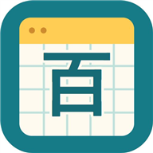

百マス計算プリントメーカー
その子に合わせた計算プリントを、無料で作成。
アプリを開く →できること
通常版の計算表と、丸で数えるサポート版を作れます。3・5・10・25・100問、数字の範囲、繰り上がり・繰り下がりなどを指定できます。
使い方
条件を決めてプリントを生成し、A4縦・倍率100%で印刷します。子ども用QRから同じ問題を画面で練習できます。先生用QRはメーカー内のカメラで読み込むと解答が表示され、画像保存・対応端末での共有ができます。
記録とプライバシー
アカウント登録は不要です。学習記録は利用した端末・ブラウザー内に保存し、端末間の同期はありません。ブラウザーのデータ削除などで消えることがあります。プリント採点は試作です。採点画像と点数は保存・外部送信せず、先生が確認して確定します。
利用環境
ブラウザーで利用できます。iPadではSafariで開いてください。カメラ利用時は使用許可が必要です。紙の印刷や実端末での利用は、環境に合わせて確認してください。
アプリを開く →制作・お問い合わせ
制作：オコジョ先生のアプリ屋さん
不具合のご報告・ご意見は X（@Templewest45） ↗ へ。
アプリ名・お使いの端末・起きたことをお知らせください。